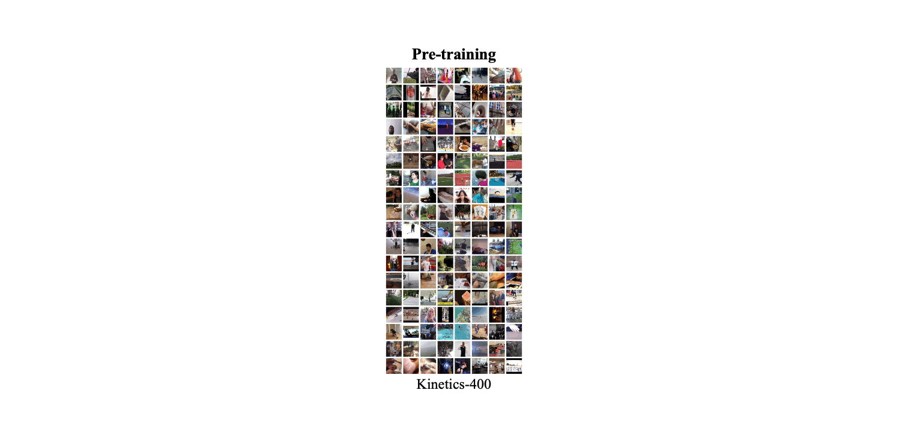
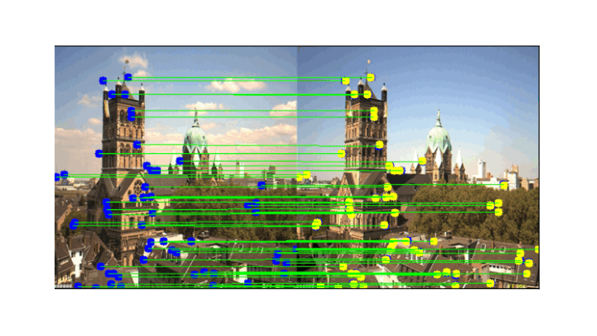
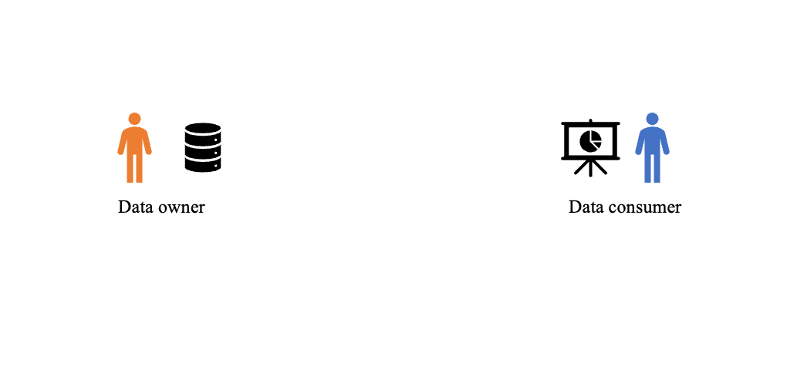
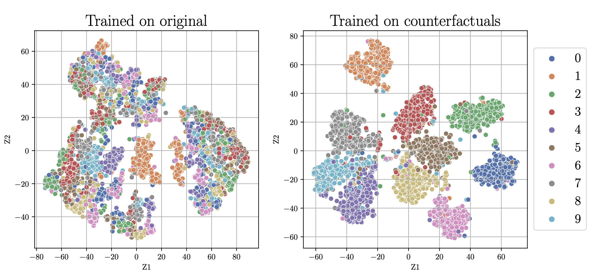
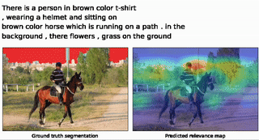
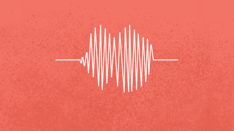
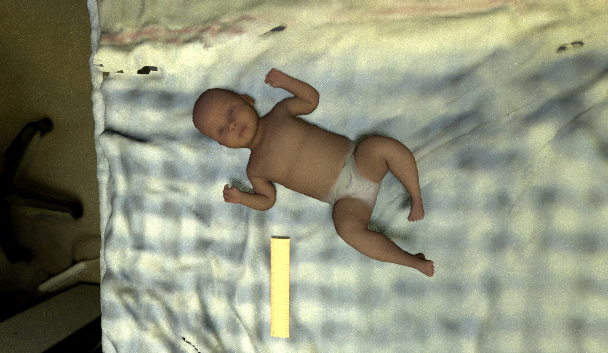
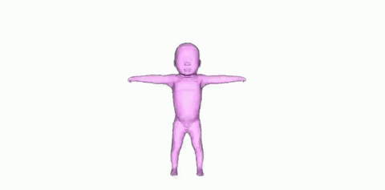

I am a first-year DPhil student advised by Prof. Andrew Zisserman at the VGG Lab at the University of Oxford. I am interested in all kinds of video understanding.
Previously, I finished my Master’s in AI at the University of Amsterdam. Along with the coursework, I did research on video understanding at the VISLab advised by Prof. dr. Cees Snoek and Dr. Makarand Tapaswi.
In the past, I’ve been a Research Fellow at Wadhwani AI where I primarily worked on estimating infant anthropometry from a monocular video. During the pandemic, I also worked on using cough as a biomarker to detect presence of CoVID-19.
Before that, I completed my Bachelor’s in Mathematics at IIT Kanpur where I worked with Dr. Piyush Rai and Dr. Swaprava Nath.
Selected publications
2024

ArXiV 2024
2023

CVPR 2023
Also presented at Workshop on Understanding Foundation Models at ICLR 2023
2022

ECCV, 2022 (Tel Aviv, Israel)

VIPrior Workshop, ECCV, 2022 (Tel Aviv, Israel)
2021

WSDM Demos, 2021 (Virtual event, Israel)
Work done during Internship at Adobe Research (India) in 2018.
Selected projects

ML Reproducibility Challenge, ReScience Journal
Invited to present at Journal Showcase Poster Session @ NeurIPS 2022.

Best poster award in the Interpretability course at UvA
AI in the real-world

ArXiv, 2021 (Mumbai, India)
Media credits: Wadhwani AI



Underlying Model: SMIL (Nicholas Hesse et. al)
Copyrights: Wadhwani AI
Miscellaneous
- Service: Emergency reviewer at ECCV 2022, Reviewer at CVPR 2023
- Teaching: TA for Deep Learning (DL1) at the University of Amsterdam
- Invited lecture for the Fairness in AI course at the University of Amsterdam

news
| Mar 5, 2023 | A shorted version of our paper got accepted to ME-FoMo Workshop ICLR 2023! |
|---|---|
| Feb 27, 2023 | Our paper on time in video-language models got accepted to CVPR 2023! |
| Jul 1, 2022 | Our paper got accepted to ECCV 2022! |
| Apr 10, 2022 | Our paper recieved the Best Paper Award at MLRC 2021! |
| Jul 16, 2021 | Today is my last day at Wadhwani AI after completing incredible 2 years. |